⚔️ Оружие
 Арбалетвес 13
Арбалетвес 13

Арбалет
Позволяет выпускать Стрела без усилий. Перезарядка требует времени, но выстрел очень мощный.
 Битавес 3
Битавес 3
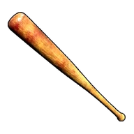
Бита
Бейсбольная бита, подходит для ближнего боя. Вот только Палы слишком большие, чтобы быть мячом.
 Блочный луквес 17
Блочный луквес 17
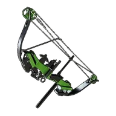
Блочный лук
Модернизированный лук. Выпускает более мощные стрелы.
 Боевой пистолет-пулемётвес 15
Боевой пистолет-пулемётвес 15

Боевой пистолет-пулемёт
Пистолет‑пулемёт, созданный из слитков Соллайта. Улучшенный магазин и патроны повышают подавляющую огневую мощь.
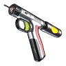
Бустерная пушкавес 8
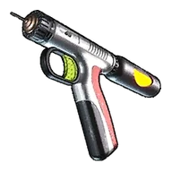
Бустерная пушка
Если выстрелить в союзного Пала, его атака и защита временно усилятся. Если выстрелить во врага — он получит урон.
 Ветхая штурмовая винтовкавес 15
Ветхая штурмовая винтовкавес 15
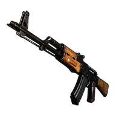
Ветхая штурмовая винтовка
Самодельная штурмовая винтовка, собранная из подручного хлама. Обладает высокой скорострельностью и большой дальностью стрельбы, но слабой мощностью одного выстрела.
 Ветхий дробовиквес 24
Ветхий дробовиквес 24

Ветхий дробовик
Самодельный дробовик, собранный из хлама. Обладает малой дальностью, но эффективен в ближнем бою.
 Ветхий пистолет‑пулемётвес 15
Ветхий пистолет‑пулемётвес 15

Ветхий пистолет‑пулемёт
Самодельный пистолет‑пулемёт, собранный из подручного хлама. Отличается высокой скорострельностью, но низкой мощностью выстрела.
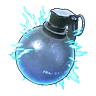
Водяная гранатавес 0,1
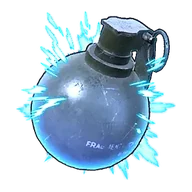
Водяная граната
Водяная граната, эффективная в бою на средней дистанции. Взрывается через несколько секунд после броска, нанося урон элементом Вода.
 Гига-пистолет с крюкомРедкий · вес 1
Гига-пистолет с крюкомРедкий · вес 1

Гига-пистолет с крюком
Пистолет с крюком для быстрого перемещения. Выпускает крюк и подтягивает владельца к точке выстрела. Разработан на основе данных прототипа и отличается повышенной эффективностью.
Граната земливес 0,1
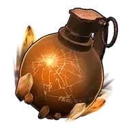
Граната земли
Граната земли, эффективная в бою на средней дистанции. Взрывается через несколько секунд после броска, нанося урон элементом Земля.
 Граната травывес 0,1
Граната травывес 0,1
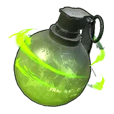
Граната травы
Граната травы, эффективная в бою на средней дистанции. Взрывается через несколько секунд после броска, нанося урон элементом Трава.
 Граната тьмывес 0,1
Граната тьмывес 0,1
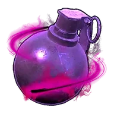
Граната тьмы
Граната тьмы, эффективна в бою на средней дистанции. Взрывается через несколько секунд после броска, нанося урон элементом Тьма.
 Гранатомётвес 30
Гранатомётвес 30

Гранатомёт
Выпускает гранаты, наносящие урон по области при взрыве. Эффективно против большого числа врагов.
 Граффити-ружье 1вес 8
Граффити-ружье 1вес 8

Граффити-ружье 1
Удивительное ружьё, рисующее Пала в месте попадания Каттива. Развлекайтесь, рисуя на полу и стенах.
 Граффити-ружье 2вес 8
Граффити-ружье 2вес 8

Граффити-ружье 2
Удивительное ружьё, рисующее Пала в месте попадания Ламболл. Развлекайтесь, рисуя на полу и стенах.
Граффити-ружье 3вес 8

Граффити-ружье 3
Удивительное ружьё, рисующее Пала в месте попадания Мелпака. Развлекайтесь, рисуя на полу и стенах.
 Граффити-ружье 4вес 8
Граффити-ружье 4вес 8
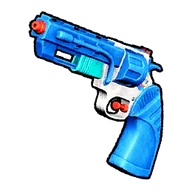
Граффити-ружье 4
Удивительное ружьё, рисующее Пала в месте попадания Анубис. Развлекайтесь, рисуя на полу и стенах.
 Граффити-ружье 5вес 8
Граффити-ружье 5вес 8

Граффити-ружье 5
Удивительное ружьё, рисующее Пала в месте попадания Релаксаурус. Развлекайтесь, рисуя на полу и стенах.
 Двухствольный дробовиквес 24
Двухствольный дробовиквес 24

Двухствольный дробовик
Дробовик для ближнего боя. Может сделать два выстрела подряд. Небольшая ёмкость магазина, зато высокая огневая мощь.
 Деревянная дубинкавес 5
Деревянная дубинкавес 5
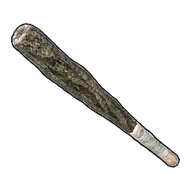
Деревянная дубинка
Деревянная дубинка для ближнего боя. Мелких Палов, глядишь, и с одного удара уложит.
 Драконья гранатавес 0,1
Драконья гранатавес 0,1
Драконья граната
Драконья граната, эффективная в бою на средней дистанции. Взрывается через несколько секунд после броска, нанося урон элементом Дракон.
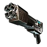
Дробовик с выбросом ядравес 20
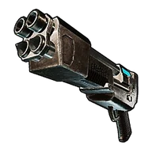
Дробовик с выбросом ядра
[Коллаборация с ULTRAKILL] Дробовик на тепловой энергии: стреляет непрерывно. Бросок сферы захвата заменяется выстрелом ядром. При удержании кнопки ядро накапливает заряд, и дальность выстрела увеличивается. Ядро, поражённое выстрелом из оружия «Револьвер меткого стрелка», взрывается.
 Дрономётвес 5
Дрономётвес 5

Дрономёт
Дрономёт для автономных атак. Разворачивает до 9 дронов для непрерывного подавления.
 Жезл ЭлизабиНеобычный · вес 20
Жезл ЭлизабиНеобычный · вес 20
Жезл Элизаби
Жезл Элизаби, адаптированный для человека. От него исходит властная аура королевы.
 Зажигательная гранатавес 0,1
Зажигательная гранатавес 0,1
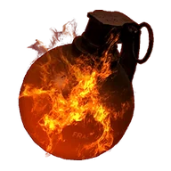
Зажигательная граната
Зажигательная граната, эффективная в бою на средней дистанции. Взрывается через несколько секунд после броска, поджигая область вокруг.
 Замораживающая гранатавес 0,1
Замораживающая гранатавес 0,1
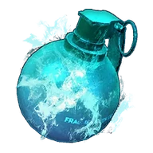
Замораживающая граната
Замораживающая граната, эффективная в бою на средней дистанции. Взрывается через несколько секунд после броска, замораживая область вокруг.
 Зарядная винтовкавес 20
Зарядная винтовкавес 20
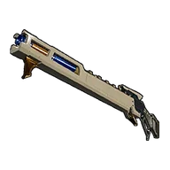
Зарядная винтовка
Высокотехнологичная зарядная лучевая винтовка. Накопив энергию, выпускает мощный выстрел.
 Исцеляющая граната для Паловвес 0,1
Исцеляющая граната для Паловвес 0,1
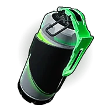
Исцеляющая граната для Палов
Осколочная граната с эффектом исцеления. Взрывается при попадании, восстанавливая HP союзных Палов.
 Каменная киркавес 10
Каменная киркавес 10
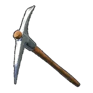
Каменная кирка
Кирка для добычи полезных ископаемых. Не слишком эффективна, поскольку сделана из камня.
Каменное копьёвес 10
Каменное копьё
Копьё для ближнего боя. Позволяет сражаться, сохраняя дистанцию с противником.
 Каменный топорвес 10
Каменный топорвес 10

Каменный топор
Топор для рубки деревьев. Не слишком острый, поскольку сделан из камня.
 Катанавес 10
Катанавес 10

Катана
Катана это оружие для ближнего боя. Благодаря острому лезвию способна рассечь врага одним ударом.
 Кирка из пал-металлаЭпический · вес 25
Кирка из пал-металлаЭпический · вес 25
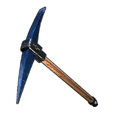
Кирка из пал-металла
Кирка для добычи полезных ископаемых. Благодаря пал-металлу отличается поразительной эффективностью. Объёмы добычи руды ур.4
Кирка из рафинированного металлаРедкий · вес 20
Кирка из рафинированного металла
Кирка для добычи полезных ресурсов. Её прочность и эффективность были значительно улучшены. Объёмы добычи руды ур.2
 Клинок Земливес 10
Клинок Земливес 10

Клинок Земли
[Коллаборация с Terraria] При взмахе этот удивительный клинок испускает изумрудную ударную волну. Несмотря на то, что это оружие ближнего боя, оно может атаковать врагов вдалеке.
 Копьё БигардаНеобычный · вес 15
Копьё БигардаНеобычный · вес 15
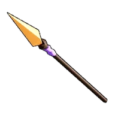
Копьё Бигарда
Копьё Бигард, модифицированное под человека. От него веет искренней преданностью.
 Копьё ЛилиРедкий · вес 10
Копьё ЛилиРедкий · вес 10

Копьё Лили
Излюбленное копьё Лили. Карает тех, кто обращается с Палами без уважения.
Копьё из рафинированного металлавес 20
Копьё из рафинированного металла
Копьё для ближнего боя. Сделано из качественного металла, обладает повышенной силой атаки. Позволяет сражаться, сохраняя дистанцию с противником.
 Лазерная винтовкавес 18
Лазерная винтовкавес 18

Лазерная винтовка
Оружие, стреляющее лазерными лучами. Обладает высокой огневой мощью и простое в использовании.
 Лазерный мечвес 10
Лазерный мечвес 10

Лазерный меч
Энергетический меч, созданный из слитков Соллайта. Высокомощное энергетическое лезвие позволяет мгновенно разрезать цель в ближнем бою.
 Лазерный пулемёт Гатлингавес 50
Лазерный пулемёт Гатлингавес 50
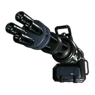
Лазерный пулемёт Гатлинга
Стреляет скорострельными лучевыми залпами. Эффективен против нескольких врагов одновременно.
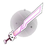
Легендарный МяумурЛегендарный · вес 22
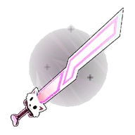
Легендарный Мяумур
[Коллаборация с Terraria] Легендарный Мяумур, созданный из Люминитовый слиток. При каждом взмахе выпускает отскакивающие кошачьи снаряды, которые атакуют врага.
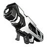
Лучемётвес 30

Лучемёт
Лучемёт, выпускающий высокоплотный луч, вызывающий взрыв на большой площади. При непрерывной стрельбе необходимо следить за перегревом.
 Лучерассеивательвес 20
Лучерассеивательвес 20

Лучерассеиватель
Лучевое оружие ближнего боя. Выпускает сжатую энергию в виде рассеянного луча.
 Мега-пистолет с крюкомНеобычный · вес 1
Мега-пистолет с крюкомНеобычный · вес 1

Мега-пистолет с крюком
Пистолет с крюком, позволяющий быстро перемещаться. Выпускает крюк в точку выстрела и подтягивает к ней владельца. Улучшенная модель с увеличенной дальностью действия.
 Металлическая битавес 3
Металлическая битавес 3

Металлическая бита
Металлическая бита, пригодный и для ближнего боя. Непонравившихся противников можно этим забивать без пощады.
Металлическая киркаНеобычный · вес 15
Металлическая кирка
Кирка для добычи полезных ископаемых. Благодаря металлической конструкции её прочность и эффективность были улучшены. Объёмы добычи руды ур.1
 Металлический топорНеобычный · вес 15
Металлический топорНеобычный · вес 15
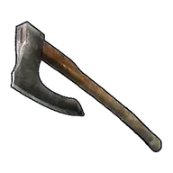
Металлический топор
Топор для рубки деревьев. Изготовлен из металла, поэтому легко справляется даже с твёрдой древесиной. Эффективен при вырубке прочных деревьев в глубине континента. Объёмы лесозаготовки ур.1
Металлическое копьёвес 15
Металлическое копьё
Копьё для ближнего боя. Сделано из металла, обладает повышенной силой атаки. Позволяет сражаться, сохраняя дистанцию с противником.
 МеталлоискательЭпический · вес 25
МеталлоискательЭпический · вес 25
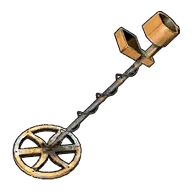
Металлоискатель
При использовании обнаруживает скрытую хромаитовую руду в подземельях и позволяет её отметить. Метка исчезает при удалении на определённое расстояние.
 Метеоромётвес 30
Метеоромётвес 30
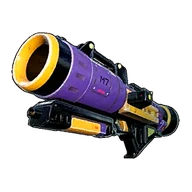
Метеоромёт
Невероятное оружие, созданное из обработанного метеорита. При попадании взрывается подобно метеориту.
 Механический луквес 6
Механический луквес 6

Механический лук
Лук, созданный из слитков Соллайта. Значительно увеличены начальная скорость и пробивная сила, что позволяет вести высокоточную стрельбу на дальних дистанциях.
 Мечвес 10
Мечвес 10
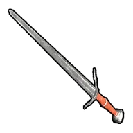
Меч
Меч для боя на ближней дистанции. Острота лезвия впечатляет! Чем ближе к врагу, тем больше опасности.
 Многозарядная ракетная установкавес 30
Многозарядная ракетная установкавес 30

Многозарядная ракетная установка
Ракетница с несколькими стволами. Выпускает серию ракет, автоматически захватывающих и преследующих цели.
 Мушкетвес 20
Мушкетвес 20

Мушкет
Простое старомодное ружьё. Стреляет мощно, но перезарядка требует времени.
 МяумурЛегендарный · вес 22
МяумурЛегендарный · вес 22
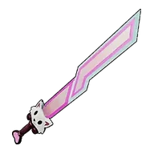
Мяумур
[Коллаборация с Terraria] Согласно легенде Кроадзиро привез этот меч из далекой страны. Только совершенно непонятно зачем. При каждом взмахе выпускает отскакивающие кошачьи снаряды, которые атакуют врага.
 Начальная удочка (Гумосс)вес 5
Начальная удочка (Гумосс)вес 5

Начальная удочка (Гумосс)
Удочка для ловли Палов. Более прочная, чем Начальная удочка (Чиллет), и немного лучше по характеристикам. Предназначена для начинающих, с её помощью можно поймать Палов низкого уровня.
 Начальная удочка (Чиллет)вес 5
Начальная удочка (Чиллет)вес 5
Начальная удочка (Чиллет)
Удочка для ловли Палов. Чтобы начать рыбалку, возьмите приманку и используйте удочку у воды, где виднеется рыба. Предназначена для начинающих, с её помощью можно поймать Палов низкого уровня.
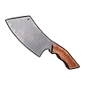
Нож для разделки мясавес 10
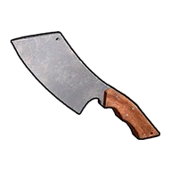
Нож для разделки мяса
Нож для разделки призванного Пала. Во время использования команда Погладить меняется на Разделать. Разделка Палов необратима.
 Ночное сияниевес 5
Ночное сияниевес 5
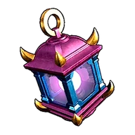
Ночное сияние
[Коллаборация с Terraria] Таинственный фонарь, излучающий радужное свечение. При поднятии выпускает несколько световых снарядов, преследующих врага и многократно атакующих его.
Огнемётвес 45
Огнемёт
Огнемёт, выпускающий огонь на большое расстояние. Поджигает поражённых врагов.
 Огненный арбалетвес 13
Огненный арбалетвес 13
Огненный арбалет
Арбалет, наносящий элементальный урон (Огонь). Поджигает Палов огненными стрелами, после чего их становится проще поймать. Использует ｢Огненная стрела｣.
 Однозарядная винтовкавес 20
Однозарядная винтовкавес 20

Однозарядная винтовка
Однозарядная винтовка. Требует времени на перезарядку. Низкая скорострельность, но каждый выстрел очень мощный.
 Однозарядный сферомётвес 30
Однозарядный сферомётвес 30

Однозарядный сферомёт
Сферомёт для стрельбы сферами. Позволяет захватывать Палов с большого расстояния.
 Осколочная гранатавес 0,1
Осколочная гранатавес 0,1
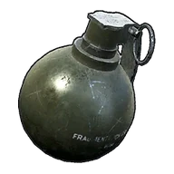
Осколочная граната
Осколочная граната эффективна в бою на средней дистанции. Взрывается через пару секунд после броска, нанося урон врагам.
 Перегревающаяся винтовкавес 15
Перегревающаяся винтовкавес 15
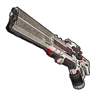
Перегревающаяся винтовка
Штурмовая винтовка, способная стрелять без перезарядки. Однако при непрерывной стрельбе происходит перегрев, из-за чего появляется большая пауза — будьте осторожны.
 Переносной факелвес 5
Переносной факелвес 5
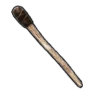
Переносной факел
Освещает тьму и защищает от холода. Можно приспособить для ближнего боя.
 Пистолетвес 8
Пистолетвес 8

Пистолет
Пистолет с увеличенной ёмкостью магазина и повышенной скорострельностью. Мощнее Самодельный пистолет по урону в секунду.
 Пистолет с крюкомвес 1
Пистолет с крюкомвес 1

Пистолет с крюком
Пистолет с крюком, позволяющий быстро перемещаться. Выпускает крюк в точку выстрела и подтягивает к ней владельца. Облегчает передвижение по пересечённой местности и на высотах.
 Пистолет‑пулемётвес 15
Пистолет‑пулемётвес 15

Пистолет‑пулемёт
Пистолет-пулемёт с очень высокой скорострельностью. Удобен в обращении и эффективен в ближнем бою.
 Плазменная винтовкавес 5
Плазменная винтовкавес 5

Плазменная винтовка
Винтовка, посылающая электрический разряд от точки попадания с цепной атакой по нескольким противникам.
 Плазменная пушкавес 30
Плазменная пушкавес 30

Плазменная пушка
Выпускает высокоэнергетические снаряды. При попадании вызывает энергетический взрыв.
 Плазменный мультирезакЛегендарный · вес 50
Плазменный мультирезакЛегендарный · вес 50
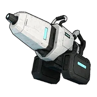
Плазменный мультирезак
Портативный плазменный резак, концентрирующий и излучающий плазменную энергию. Подходит для добычи руды, рубки деревьев и других задач. Благодаря высокой мощности способен добывать особую руду. Увеличение добычи и вырубки
 Полуавтоматическая винтовкавес 20
Полуавтоматическая винтовкавес 20
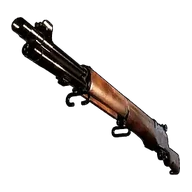
Полуавтоматическая винтовка
Винтовка с улучшенной скорострельностью. Хорошо прицеливается и наносит мощный урон на средней дистанции.
 Полуавтоматический дробовиквес 20
Полуавтоматический дробовиквес 20

Полуавтоматический дробовик
Скорострельный дробовик. Обладает выдающейся огневой мощью на ближней дистанции.
Помповый дробовиквес 20
Помповый дробовик
Улучшенный дробовик с увеличенным запасом патронов. Показатель DPS на короткой дистанции стал ещё выше.
 Примитивный мечвес 10
Примитивный мечвес 10
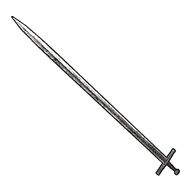
Примитивный меч
Меч для ближнего боя. Недооценивать его остроту не стоит! Но чем ближе подходишь к врагу, тем больше опасности.
 Продвинутая удочка (Депрессо)Легендарный · вес 5
Продвинутая удочка (Депрессо)Легендарный · вес 5
Продвинутая удочка (Депрессо)
Удочка для ловли Палов. Более прочная, чем Продвинутая удочка (Пенгуллет), и немного лучше по характеристикам.
 Продвинутая удочка (Пенгуллет)Эпический · вес 5
Продвинутая удочка (Пенгуллет)Эпический · вес 5
Продвинутая удочка (Пенгуллет)
Удочка для ловли Палов. Чтобы начать рыбалку, возьмите приманку и используйте удочку у воды, где виднеется рыба. Обладает улучшенными характеристиками, с её помощью рыбачить намного проще.
 Прототипный дробовиквес 20
Прототипный дробовиквес 20

Прототипный дробовик
Дробовик, созданный из слитков Соллайта. Обладает подавляющей огневой мощью на ближней дистанции, а благодаря специальному магазину имеет высокую боевую выносливость.
 Пулемёт Гатлингавес 50
Пулемёт Гатлингавес 50

Пулемёт Гатлинга
Пулемёт Гатлинга, обеспечивающая огонь на подавление за счет своей скорострельности. Способна изрешетить противника подавляющим огнём.
 Пушка вихрявес 15
Пушка вихрявес 15

Пушка вихря
[Коллаборация с Terraria] Большое ружьё, использующее энергию неизвестного происхождения. С вероятностью 66% не расходует боеприпасы. Через определённые промежутки времени выпускает ракеты, преследующие врагов и взрывающиеся при приближении.
 Ракетная установкавес 30
Ракетная установкавес 30

Ракетная установка
Выпускает ракеты, автоматически захватывающие и преследующие цели. При попадании ракеты взрываются, нанося урон по широкой области.
 Ракетомётвес 30
Ракетомётвес 30

Ракетомёт
Ракетомёт способен проводить мощные бомбардировки с большого расстояния.
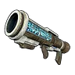
Рассеивающий сферомётвес 30
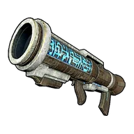
Рассеивающий сферомёт
Сферомёт новой модели, стреляющий сразу множеством сфер. Позволяет массово отлавливать Палов.
 Револьвер меткого стрелкавес 8
Револьвер меткого стрелкавес 8
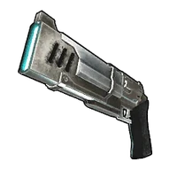
Револьвер меткого стрелка
[Коллаборация с ULTRAKILL] Револьвер на электричестве: стреляет непрерывно. Бросок сферы захвата заменяется броском монеты, а каждая пуля, попавшая в монету при стрельбе из оружия «Револьвер меткого стрелка», отскакивает к врагам.
 Самодельный пистолетвес 10
Самодельный пистолетвес 10

Самодельный пистолет
Самодельный пистолет, собранный из подручного хлама. Подходит для боя на близкой дистанции, но может стрелять только по одному выстрелу за раз.
 Самонаводящийся сферомётРедкий · вес 30
Самонаводящийся сферомётРедкий · вес 30

Самонаводящийся сферомёт
Сферомёт для запуска сфер. Выпущенные сферы преследуют Палов.
 Средняя удочка (Каттива)Необычный · вес 5
Средняя удочка (Каттива)Необычный · вес 5
Средняя удочка (Каттива)
Удочка для ловли Палов. Чтобы начать рыбалку, возьмите приманку и используйте удочку у воды, где виднеется рыба. Обладает улучшенными характеристиками, с её помощью рыбачить несколько проще.
 Средняя удочка (Кроадзиро)Редкий · вес 5
Средняя удочка (Кроадзиро)Редкий · вес 5
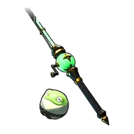
Средняя удочка (Кроадзиро)
Удочка для ловли Палов. Более прочная, чем Средняя удочка (Каттива), и немного лучше по характеристикам.
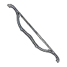
Старый луквес 6

Старый лук
Примитивное оружие дальнего боя. Сделано кое-как, так что урон минимален.
 Старый револьвервес 8
Старый револьвервес 8

Старый револьвер
Немного потрёпанный револьвер с вращающимся барабаном. Превосходит Пистолет по мощности одного выстрела.
 Тактический гранатомётвес 30
Тактический гранатомётвес 30

Тактический гранатомёт
Гранатомёт, созданный из слитков Соллайта. Улучшенная стабильность траектории позволяет вести точные обстрелы на больших дистанциях.
 Тера-пистолет с крюкомЭпический · вес 1
Тера-пистолет с крюкомЭпический · вес 1
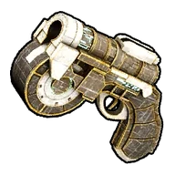
Тера-пистолет с крюком
Пистолет с крюком для быстрого перемещения. Выпускает крюк в точку выстрела и подтягивает владельца. Результат исследований — невероятная манёвренность и свобода передвижения.
 Террапризмавес 5
Террапризмавес 5

Террапризма
[Коллаборация с Terraria] Таинственный клинок с радужным лезвием. При взмахе призывает благословленный меч, который вступает в бой. Можно призвать одновременно до 9 мечей.
 Топор из пал-металлаЭпический · вес 25
Топор из пал-металлаЭпический · вес 25
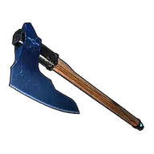
Топор из пал-металла
Топор для рубки деревьев. Обладает феноменальной остротой благодаря пал-металлу. Без труда срубает даже качественную твёрдую древесину, растущую в экстремальных условиях. Объёмы лесозаготовки ур.4
Топор из рафинированного металлаРедкий · вес 20
Топор из рафинированного металла
Топор для рубки деревьев. Обладает повышенной прочностью и остротой. Позволяет добывать твёрдую древесину из качественных деревьев в суровых регионах. Объёмы лесозаготовки ур.2
 Трехзарядный луквес 8
Трехзарядный луквес 8

Трехзарядный лук
Улучшенный лук, способный выпускать одновременно 3 стрелы. Благодаря загадочной силе расходует всего 1 Стрела за выстрел.
 Тяжёлая штурмовая винтовкавес 5
Тяжёлая штурмовая винтовкавес 5

Тяжёлая штурмовая винтовка
Штурмовая винтовка, созданный из слитков Соллайта. Сохраняя универсальность, оружие было усилено для использования более мощных патронов.
 Улучшенная осколочная гранатавес 0,1
Улучшенная осколочная гранатавес 0,1
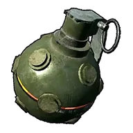
Улучшенная осколочная граната
Улучшенная модель осколочной гранаты. Взрывается через несколько секунд после броска, нанося большой урон врагам.
 Улучшенное копьё ЛилиРедкий · вес 10
Улучшенное копьё ЛилиРедкий · вес 10

Улучшенное копьё Лили
Усиленная версия любимого копья Лили. Пронзает тех, кто пренебрегает Палами.
 Улучшенный луквес 25
Улучшенный луквес 25
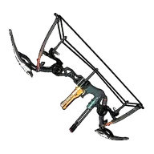
Улучшенный лук
Лук, реконструированный с применением передовых технологий. Выпускает чрезвычайно мощные стрелы.
 Ультрапистолет-гарпунЛегендарный · вес 1
Ультрапистолет-гарпунЛегендарный · вес 1

Ультрапистолет-гарпун
Пистолет-гарпун для быстрого перемещения. Выпускает крюк и подтягивает к нему владельца. Использование новых материалов позволило сократить время теплоизлучения.
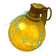
Шоковая гранатавес 0,1
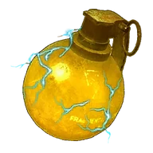
Шоковая граната
Шоковая граната, эффективная в бою на средней дистанции. Взрывается через несколько секунд после броска, поражая током область вокруг.
 Штурмовая винтовкавес 15
Штурмовая винтовкавес 15

Штурмовая винтовка
Штурмовая винтовка ведёт плотный подавляющий огонь. Идеально подходит для сражений с сильными противниками.
 Экскалибурвес 10
Экскалибурвес 10

Экскалибур
[Коллаборация с Terraria] Священный меч, сияющий золотым светом. При взмахе испускает ударную волну вокруг владельца.
 Электродубинкавес 10
Электродубинкавес 10
Электродубинка
Оружие ближнего боя, которое при ударе оглушает током. Оглушённых Палов проще поймать.
 Энергетический мечвес 10
Энергетический мечвес 10

Энергетический меч
Энергетический меч это оружие для ближнего боя. Мощный лазерный луч прожигает цели.
 Энергетическое ружьевес 20
Энергетическое ружьевес 20
Энергетическое ружье
Стреляющее энергетическими патронами ружьё. Способно долго вести непрерывную стрельбу, на близкой дистанции обладает огромной убойной силой.
 Ядовитый арбалетвес 13
Ядовитый арбалетвес 13
Ядовитый арбалет
Устрашающий Арбалет, выстрелы из которого отравляют цель. Отравленных Палов становится проще поймать. Использует ｢Ядовитая стрела｣.
Ядовитый луквес 6
Ядовитый лук
Грозный лук, отравляющий цель. Отравленных Палов легче поймать. Для выстрела требуется Ядовитая стрела.